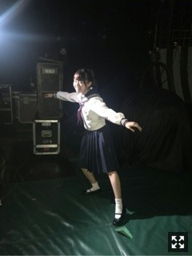
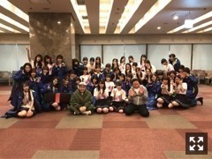
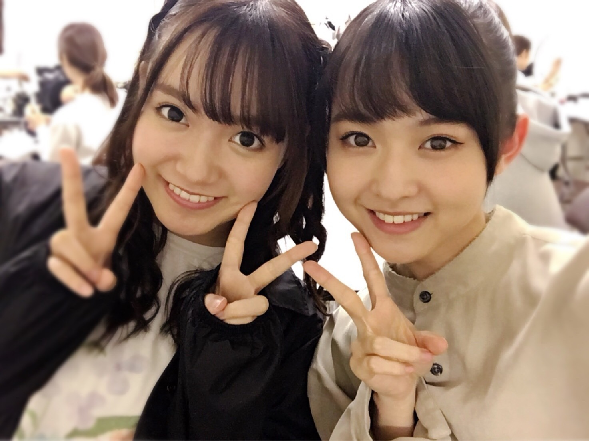

| 2017/11 10 Fri | 伊藤万理華 きっかけ。787回目 |

真夏の全国ツアー2017ファイナル
東京ドーム2days完走しました！
ライブで徹してることがずっとあるのですが、
それは、誰よりもいちばん楽しむことです。
ステージで衣装を着て
パフォーマンスしてる時だけは
変な殻も全部捨てて
自分がいちばんだと思い込むこと。
私が唯一、自信を持ってできることでした。
それはどのステージでも同じことで、
絶対誰かが見てくれるから。
だから、誰かの目にとまるよう
いつも全身全霊でした。
少しでも目にとまったなら嬉しいです！
どの瞬間もずっと忘れないんだろうなあ
一緒に歌って踊るみんな、
かっこよくて美しくて華やかで
やっぱりすげえと思った。
お客さんからのサプライズも
嬉しかった。
ステージのいちばん上から見た景色
綺麗だった。
きっかけ
迷っていた時期にやっと決心できた瞬間が
アンダーライブ中国地方で歌った
きっかけでした。
あの時から私の中のテーマ曲。
最後の最後に歌えて良かった。
ありがとう！
花道を隣で歩いてくれた玲香の顔が
忘れられないぜー
泣きたくなかったな
披露した曲全部思い入れ深い。
あらロマも他の星からも
ここにいる理由も生まれたままでも咄嗟も
インフルエンサーも！
東京ドームでパフォーマンスできてよかった！

このメンバーじゃなかったら
ここにいなかった、ほんとに。
スタッフの皆様、メンバーのみんな
本当にお疲れ様でした！！
来てくださった皆様
本当にありがとうございました。

明日は京都 北野天満宮にて
スペシャルトークショーに登壇します。
まだまだ開催中。
興味があれば、ぜひ足を運んでください！
《伊藤万理華の脳内博覧会》
KYOTO NIPPON FESTIVAL
10月21日(土)〜12月3日(日)
http://www.kyotonippon.com
福岡ももうすぐ！
《伊藤万理華の脳内博覧会mini》
FUKUOKA PARCO 6F
11月17日(金)〜12月3日(日)
http://www.parco-art.com/web/other/exhibition.html?id=1172
@nounaihakurankai
伊藤万理華の脳内博覧会official
http://instagram.com/nounaihakurankai
スペシャルトークショーに登壇します。
まだまだ開催中。
興味があれば、ぜひ足を運んでください！
《伊藤万理華の脳内博覧会》
KYOTO NIPPON FESTIVAL
10月21日(土)〜12月3日(日)
http://www.kyotonippon.com
福岡ももうすぐ！
《伊藤万理華の脳内博覧会mini》
FUKUOKA PARCO 6F
11月17日(金)〜12月3日(日)
http://www.parco-art.com/web/other/exhibition.html?id=1172
@nounaihakurankai
伊藤万理華の脳内博覧会official
http://instagram.com/nounaihakurankai
活動に関しては
12月23日仙台の握手会で最後になります。
最後までどうか応援よろしくお願いします！
まりか